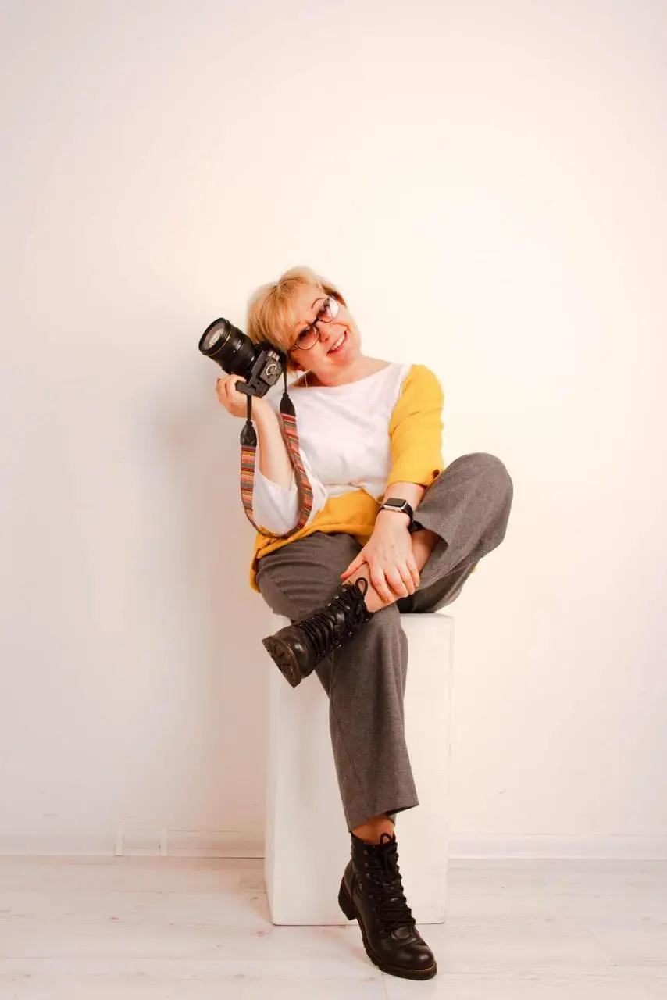

Життєпис
Я, Олена Левченко (Olena Levchenko), народилась та все життя живу у Києві, Україна. Життєве кредо – навчання. Завжди любила і люблю творчі підходи у всьому, незалежно від того, професія це чи хобі. Мистецтво фотографії захопило мене з 2019 року і дає можливість, як закарбувати цікаві моменти нашого життя ,так і виразити свою творчу індивідуальність. Багато знімаю та маю цікаві фото проєкти. Шукаю себе в різних стилях фотомистецтва. Люблю працювати з кольором, досліджувати різноманітні форми та їх взаємодію. Учасник багатьох фотографічник виставок , бієнале і он-лайн виставок. Переможець конкурсу РХ3 2024 та конкурсу BIFA 2024.
Освіта
“Основи фотографії” курс 1, Київська школа фотографії, по закінченні курсу участь у виставці випускників де отримала 1 місце в номінації “ Пейзаж”.
“Досвідчений фотограф” курс 2, Київська школа фотографії. По закінченні курсу видана фотокнига “Постіндустріальний апокаліпсис, як дзеркало розпаду тоталітарного режиму”.
Авторський майстер-клас Дмитра Хорошаєва “Креативна фотографія: чотири стихії".
Авторський курс Дмитра Богачука “Композиція фотографії”.
Авторський курс Дмитра Богачука “Колористика фотографії”.
Курс Фотошоп та Лайтрум в Київській школі фотографії.
Авторський курс Дмитра Богачука «Сучасна фотографія».
Школа MYTH курс «Колаж».
Виставки
Колективна виставка “100 шедеврів знятих на смартфон”.
Колективна виставка “1000 шедеврів знятих на смартфон”.
Колективна виставка творчого об'єднання Kyivphotos-Hall-2012 “Abctract Art Photo”.
International photo marathon 2023 “Contemporary Photograph” - номінація “long-list”.
Колективна виставка в Modi Art& Wine Gallery “Ваша фотовиставка”.
Он-лайн виставка в галереї ART NEW YORK “Peculiar View”.
Колективна виставка творчого об'єднання Kyivphotos-Hall-2012 “Гра уяви”.
Колективна виставка творчого об'єднання Kyivphotos-Hall-2012 “Випадкові невипадковості”.
Он-лайн виставка в ARTDOCmagazin “Heality Nature”.
Он-лайн виставка в ARTDOCmagazin “Through my Lens”.
Виставка в музеї Т.Г.Шевченка “ІІІ Міжнародне бієнале Української художньої фотографії”.
Виставка в галереї КОНСХУ “Митець”.
Міжнародний тижневий zoom-марафон сучасної фотографіі Form Gallery номінація “Special Selection”.
Виставка в Національній академії мистецтв України “Заперечення реальності”.
Участь в проекті каталогу Form Gallery Франція “100 Contemporary Ukrainian photographers”.
Колективна виставка Галерея НЮ Арт “Contemporary Ukrainian photography”.
Он-лайн виставка в ARTDOCmagazin “Beyond the frame”.
Конкурси
Переможець конкурсу РХ3 2024 в номінації “Nature” за серію фоторобіт “Зморшки часу”.
Honorable Mention конкурсу РХ3 2024в категорії FineArt за серію “Ординарні предмети в колірному полі”.
Honorable Mention конкурсу IPA в категорії Fine Art в категорії “Arcitecture building” за серію “Музика в бетоні”.
Silver Winer BIFA 2024 Category Architecture-Abstract за серію робіт “Музика в бетоні”.
Silver Winer BIFA 2024 Category Fine-Art-Still life за серію “Фігури”.
Honorable Mention конкурсу BIFA 2024 за серію “Музика в бетоні”.
Honorable Mention конкурсу BIFA 2024 за серію “Зморшки часу”.